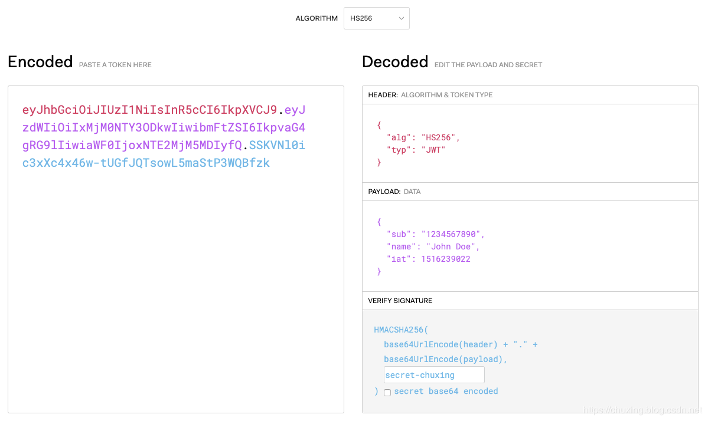

跨域认证问题
互联网服务离不开用户认证。一般流程是下面这样：
- 用户向服务器发送用户名和密码。
- 服务器验证通过后，在当前对话（session）里面保存相关数据，比如用户角色、登录时间等等。
- 服务器向用户返回一个 session_id，写入用户的 Cookie。
- 用户随后的每一次请求，都会通过 Cookie，将 session_id 传回服务器。
- 服务器收到 session_id，找到前期保存的数据，由此得知用户的身份。
这种模式的问题在于，扩展性（scaling）不好。单机当然没有问题，如果是服务器集群，或者是跨域的服务导向架构，就要求 session 数据共享，每台服务器都能够读取 session。
举例来说，A 网站和 B 网站是同一家公司的关联服务。现在要求，用户只要在其中一个网站登录，再访问另一个网站就会自动登录，请问怎么实现？
- 一种解决方案是 session 数据持久化，写入数据库或别的持久层。各种服务收到请求后，都向持久层请求数据。这种方案的优点是架构清晰，缺点是工程量比较大。另外，持久层万一挂了，就会单点失败。
- 另一种方案是服务器索性不保存 session 数据了，所有数据都保存在客户端，每次请求都发回服务器。JWT 就是这种方案的一个代表。
什么是JWT？
Json web token (JWT)，是为了在网络应用环境间传递声明而执行的一种基于JSON的开放标准（(RFC 7519)。该token被设计为紧凑且安全的，特别适用于分布式站点的单点登录（SSO）场景。JWT的声明一般被用来在身份提供者和服务提供者间传递被认证的用户身份信息，以便于从资源服务器获取资源，也可以增加一些额外的其它业务逻辑所必须的声明信息，该token可直接被用于认证，也可被加密。
JWT 的原理
服务器认证以后，生成一个经过签名的 JSON 对象，发回给用户，服务器则不用保存任何 session 数据了。从而把服务器变成无状态的，易于实现扩展。
JWT 的使用场景
以下是两个JWT的应用场景：
- 鉴权：这是JWT最常见的应用场景。当用户登录成功后，随后的每个请求都将带上JWT，从而允许用户访问被授权的服务和资源。由于它开销小切易于使用，当前被广泛应用于单点登录（Single Sign On）。
- 信息交换：JWT是不同组织间交换信息的一种很好的方式。因为JWT可以被签名（例如，通过公钥/私钥对），你可以确信信息发送者就是它们说声明的身份。此外，签名是用Header和Payload计算出来的，你可以验证内容是否被篡改。
JWT 的数据结构
扁平化形式的JWT是由通过 . 分隔的三部分组成，他们分别是：
HeaderPayloadSignature
所以，一个JWT看起来通常是如下的形式：
1 | xxxxx.yyyyy.zzzzz |
Header
头部由两部分组成：
- token类型，即JWT；
- 签名算法，例如HMAC SHA256或RSA。
一个Header的例子：
1 | { |
随后，以上JSON对象会通过 Base64Url 编码为JWT的第一部分。
Payload
载荷就是存放有效信息的地方。这个名字像是特指飞机上承载的货品，这些有效信息包含三个部分
- 标准中注册的声明
- 公共的声明
- 私有的声明
标准中注册的声明：
- iss: jwt签发者
- sub: jwt所面向的用户
- aud: 接收jwt的一方
- exp: jwt的过期时间，这个过期时间必须要大于签发时间
- nbf: 定义在什么时间之前，该jwt都是不可用的.
- iat: jwt的签发时间
- jti: jwt的唯一身份标识，主要用来作为一次性token,从而回避重放攻击。
公共的声明 ：
公共的声明可以添加任何的信息，一般添加用户的相关信息或其他业务需要的必要信息.但不建议添加敏感信息，因为该部分在客户端可解密。
私有的声明 ：
私有声明是提供者和消费者所共同定义的声明，一般不建议存放敏感信息，因为base64是对称解密的，意味着该部分信息可以归类为明文信息。
一个Payload的例子：
1 | { |
随后，Payload会通过 Base64Url 编码为JWT的第二部分。
Signature
创建签名需要用到编码后的 Header、编码后的 Payload、秘钥、Header中指定的算法。
如果你想使用HMAC SHA256算法，签名将通过如下方式生成：
1 | HMACSHA256( |
如果你想把以上概念付诸实践，可以通过 https://jwt.io/ 提供的工具来玩一玩 JWT 。如下图所示：
JWT 的使用方式
客户端收到服务器返回的 JWT，可以储存在 Cookie 里面，也可以储存在 localStorage。
此后，客户端每次与服务器通信，都要带上这个 JWT。你可以把它放在 Cookie 里面自动发送，但是这样不能跨域，所以更好的做法是放在 HTTP 请求的头信息Authorization字段里面。
1 | Authorization: Bearer <token> |
另一种做法是，跨域的时候，JWT 就放在 POST 请求的数据体里面。
JWT 的几个特点
- JWT 默认是不加密，但也是可以加密的。生成原始 Token 以后，可以用密钥再加密一次。
- JWT 不加密的情况下，不能将秘密数据写入 JWT。
- JWT 不仅可以用于认证，也可以用于交换信息。有效使用 JWT，可以降低服务器查询数据库的次数。
- JWT 的最大缺点是，由于服务器不保存 session 状态，因此无法在使用过程中废止某个 token，或者更改 token 的权限。也就是说，一旦 JWT 签发了，在到期之前就会始终有效，除非服务器部署额外的逻辑。
- JWT 本身包含了认证信息，一旦泄露，任何人都可以获得该令牌的所有权限。为了减少盗用，JWT 的有效期应该设置得比较短。对于一些比较重要的权限，使用时应该再次对用户进行认证。
- 为了减少盗用，JWT 不应该使用 HTTP 协议明码传输，要使用 HTTPS 协议传输。
示例代码
Go语言版本：
1 | package util |
参考来源：